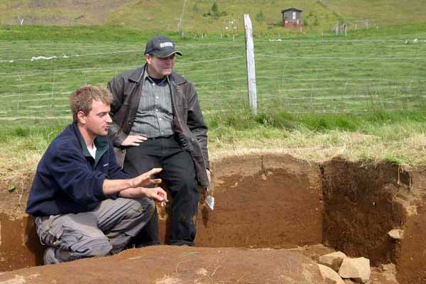
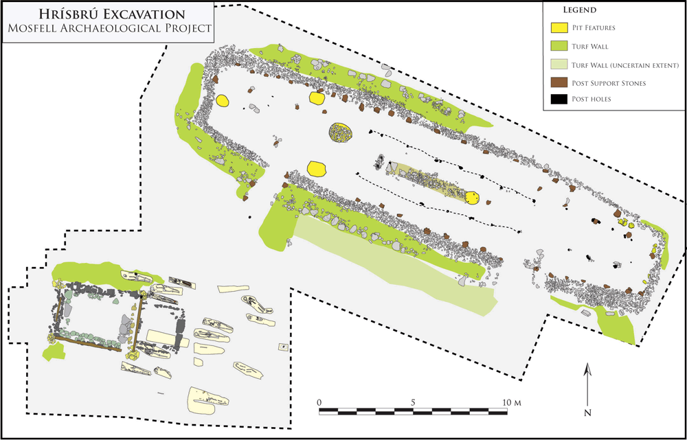
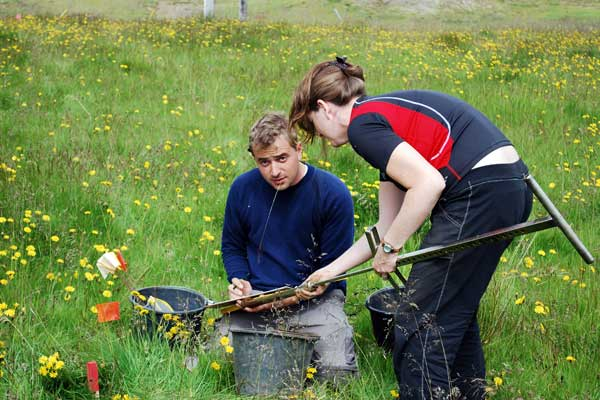

| DAVIDE ZORI, Ph.D. Curriculum Vitae |
|
| Research Interests | |
| Viking Age Scandinavia and the North Atlantic; political economy in chiefdom-level societies; social power and inequality; colonization of virgin environments; integration of archaeology and texts; medieval archaeology; Old Norse; GIS. | |
 Davide Zori, left — Hrísbrú excavation in the Mosfell Valley |
|
| Education | |
| Ph.D. Archaeology, UCLA 2010 Dissertation titled From Viking Chiefdoms to Medieval State in Iceland: The Evolution of Power Structures in the Mosfell Valley M.A. Archaeology, UCLA 2004 B.A. Anthropology & History, University of Florida 2002 (summa cum laude) |
|
| Current Positions | |
| Field Director, Mosfell Archaeological Project Staff Researcher, Center for Medieval and Renaissance Studies, UCLA Adjunct Lecturer, University of Iceland |
|
| dzori@ucla.edu | |
| Mailing Addresses | |
| USA | |
| Dr. Davide Zori UCLA Center for Medieval and Renaissance Studies 302 Royce Hall, Box 951485 Los Angeles, CA 90095-1485 USA |
|
| Iceland | |
| Dr. Davide Zori The Reykjavik Academia Hringbraut 121 101 Reykjavik Iceland |
|
| My research examines the changing nature of the power of the Icelandic chieftains during the first four centuries subsequent to the initial Scandinavian settlement of the uninhabited island in the 9th century. Particularly significant for the understanding of early Icelandic social structure is the encounter between the Viking settlers and the previously uninhabited Icelandic environment. In my dissertation, I approached these questions with a regional study of the Mosfell Valley, integrating evidence from medieval texts, oral traditions, place names, and new archaeological data. The resulting analysis illuminates the diversity of strategies that early Icelandic chieftains drew upon to support and advance their positions in the social hierarchy, including the manipulation of kinship ties, land ownership, and debt obligations; control of ports and access to prestigious trade goods from overseas; and the increased potential for wealth centralization and the materialization of ideological power provided by the adoption of Christianity in AD 1000. On a broader scale, my work seeks to provide a balanced methodology for integrating textual and archaeological data, and contribute to our understanding of the settlement of Iceland, processes of political stratification, and human migrations and adaptations to virgin environments. | |
| I conduct my research as part of the Mosfell Archaeological Project (MAP) and I have been funded by a three-year Graduate Research Fellowship from the National Science Foundation and a one-year Fulbright Fellowship to Iceland. At the invitation of my primary graduate advisor, Professor Jesse Byock, I joined MAP in 2002 and became the Field Director for the project in 2006. MAP, an on-going multidisciplinary project, has focused in the last years on the archaeological excavation of a Viking Age chieftain’s farmstead at Hrísbrú and the associated church and cemetery. We are now undertaking several expansion projects, including a targeted sub-surface survey project to locate the remains of the Viking Age port in the Leiruvogur bay at the mouth of the Mosfell Valley. I am also a member of the Hólar Archaeological Research Project, which is investigating the complex of settlements that grew up around the bishopric of northern Iceland. | |
| I am currently working on the publication of the results of the Mosfell Archaeological Project and undertaking a new phase of research in the Mosfell Valley that focuses on the earliest settlement by employing place name data, texts, and broad-based archaeological survey. The goal is to understand the structure, organization, and adaptations of the earliest colonial community in the valley. | |
| Selected Publications (see CV for full listing) | |
| In press | Davide Zori, Jesse Byock, Egill Erlendsson, Steven Martin, Thomas Wake, and Kevin Edwards. Viking Age Feasting in Iceland: Sustaining a Chiefly Political Economy in a Marginal Environment. Antiquity 87 (335). |
| 2012 | Phillip Walker, Jesse Byock, Jon Erlandson, Per Holck, Jacqueline Eng, Henry Schwarz, and Davide Zori. The Axed Man of Mosfell: Skeletal Evidence of a Viking Homicide and the Icelandic Sagas. The Bioarchaeology of Individuals. Eds. Stodder, Ann and Ann Palkovich. University of Florida Press, Gainesville. |
| 2010 | Rhonda Bathurst, Davide Zori, and Jesse Byock. Diatoms as Bioindicators of Site Use: Locating Turf Structures from the Viking Age. Journal of Archaeological Science 37 (11): 2920-2928. |
| 2010 | Sebastian Wärmländer, Davide Zori, Jesse Byock, and David Scott. Metallurgical Findings from a Viking Age Chieftain’s Farm in Iceland. Journal of Archaeological Science 37 (9): 2284-2290. |
| 2009 | Davide Zori and Jesse Byock. Introduction. Grettir’s Saga, pp. vii-xxv. Oxford University Press. |
| 2007 | Davide Zori. Nails, Rivets, and Clench Bolts: A Case for Typological Clarity. Archaeologia Islandica 6: 32-47. |
| 2005 | Jesse Byock, Phillip Walker, Jon Erlandson, Per Holck, Davide Zori, Magnús Guðmundsson, and Mark Tveskov. A Viking Age Valley in Iceland: The Mosfell Archaeological Project. Medieval Archaeology 49: 196-220. |
 Hrísbrú Excavation, Mosfell Archaeological Project |
|
 Davide Zori, left — sub-surface survey at Skeggjastaðir in the Mosfell Valley |
|
| Return to top of page | |